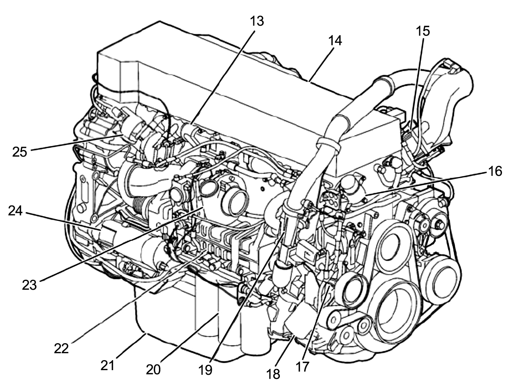

✳ من الرسم إلى المجسّم / تجربة 01
قطعة صغيرة.
فهم أكبر.
تعرّف على شكل فلتر زيت المحرك من كل زاوية، واكتشف مكوّناته بتجربة تفاعلية مصمّمة للمهندسين.
قبل أن تبدأ
هذا نموذج تعليمي مبسّط، أنشأناه برمجيًا مستوحًى من رسم الدليل، وليس ملف CAD من الشركة.
فلتر زيت المحرك
Oil filter · Volvo D13F — الشكل 2، القطعة رقم 20
● مختبر القطع
01 / 01استكشف القطعة بنفسك
جارٍ تجهيز النموذج ثلاثي الأبعاد...
OIL FILTRATIONCONCEPT MODEL / 01
Y ✳ X
✥ اسحب للدوران · قرّب بإصبعين للتكبير
✳ المعلومة أهم من الشكل
من الكتاب،
إلى مساحة الفهم.
اخترنا فلتر الزيت من رسم محرك Volvo D13F جهة التيربو. الشكل 2 يشير إلى فلاتر الزيت بالرقم 20، لكنه لا يعرض نموذجًا ثلاثي الأبعاد أو قياسات الفلتر الداخلية.
▤
افتح الرسم الأصلي ↗مرجع الرسم الأصليصفحة PDF رقم 11 · رقم الصفحة المطبوع 7
SOURCE REFERENCE FIG. 02 / 20

الرسم الأصلي من الدليل المرفق، والرقم 20 يدل على فلاتر الزيت.
تنبيه الدقة والسلامة
الأبعاد، القلاوظ، عدد فتحات القاعدة، ترتيب الوسط الداخلي، والشكل التفصيلي تقديرات توضيحية وليست مواصفات Volvo مؤكدة. لا تستخدم النموذج لشراء القطعة أو إجراء الصيانة؛ تحقق من رقم المحرك والقطعة والدليل المعتمد.